Pesticides
Le terme pesticide regroupe ~1000 matières actives utilisées pour détruire ou contrôler des organismes nuisibles (insectes, mauvaises herbes, champignons). Effets aigus dominants par les organophosphorés (crise cholinergique). Effets chroniques en cause : cancers (Parkinson, lymphomes), perturbation endocrinienne, reproduction. Réglementation Canada/Québec (ARLA, IRPeQ). En mine, l'usage est marginal mais réel : biocides de circuits hydrauliques, rodenticides en camp, herbicides périphériques, désinfectants.
Table des matières
- Définitions et types
- Familles chimiques majeures
- Voies d'exposition et intoxications
- Effets chroniques
- Réglementation et IRPeQ
- Application terrain
- Ressources
Définitions et types
Pesticide (du latin pestis = fléau, caedere = tuer) : substance utilisée pour détruire, contrôler ou repousser des organismes vivants nuisibles.
Par cible
| Type | Cible |
|---|---|
| Insecticide | Insectes |
| Herbicide | Mauvaises herbes |
| Fongicide | Champignons |
| Acaricide | Acariens |
| Rodenticide | Rongeurs |
| Nématicide | Vers |
| Algicide | Algues |
| Bactéricide / Biocide | Bactéries |
Par persistance
- Quelques heures à jours : organophosphorés, pyréthrinoïdes.
- Mois : carbamates, certains herbicides.
- Années : organochlorés (DDT, lindane, chlordane) → bioaccumulation, chaîne alimentaire.
Familles chimiques majeures
| Famille | Mécanisme | Exemples |
|---|---|---|
| Organochlorés | Bloquent transmission nerveuse (canaux Na+) | DDT, lindane, aldrine, dieldrine, chlordane. Très persistants. Plusieurs interdits. |
| Organophosphorés (OP) | Inhibent acétylcholinestérase | Malathion, parathion, chlorpyrifos, glyphosate (variante phosphonate). Crise cholinergique aiguë. |
| Carbamates | Inhibent cholinestérase (réversible) | Aldicarbe, carbaryl, carbofuran |
| Pyréthrinoïdes | Action sur canaux Na+ des insectes | Cyperméthrine, perméthrine, deltaméthrine. Faible toxicité aiguë chez l'humain. |
| Néonicotinoïdes | Agonistes nicotiniques | Imidaclopride, clothianidine. Toxiques pour les abeilles (cause majeure du déclin). |
| Chlorophénoxy (herbicides) | Imitent les auxines | 2,4-D, MCPA. Contamination historique TCDD (Agent Orange). |
| Triazines | Photosynthèse | Atrazine. Perturbateur endocrinien suspect. |
| Glyphosate | Inhibe l'EPSPS (synthèse acides aminés) | Roundup. CIRC 2A (probable cancérogène). Controverse persistante. |
| Fumigants | Action gazeuse | Bromure de méthyle (interdit Montréal), phosphine, chloropicrine |
| Fongicides | Variés | Mancozèbe, captane, fluazinam |
| Rodenticides | Anticoagulants | Warfarine, brodifacoum, bromadiolone |
{kind=link}
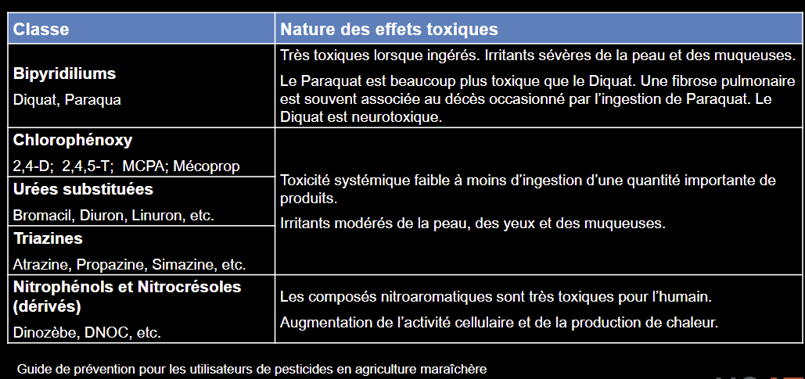
Toucher l'image pour l'agrandir{kind=link}
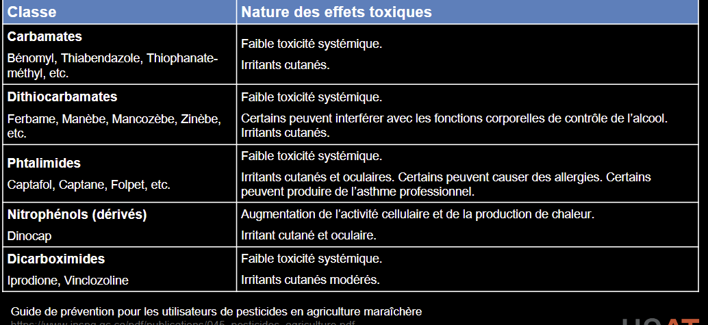
Toucher l'image pour l'agrandirVoies d'exposition et intoxications
Voies
{kind=link}
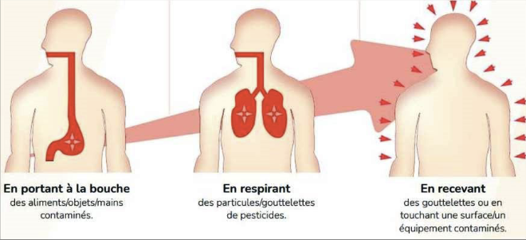
Toucher l'image pour l'agrandir- Cutanée : la voie principale en application (pulvérisation). Solvants organiques des formulations facilitent l'absorption.
- Respiratoire : aérosols, brouillards de pulvérisation, vapeurs.
- Digestive : ingestion accidentelle (suicide, enfants), contamination mains-bouche.
L'absorption cutanée varie fortement selon le site du corps : le scrotum, le visage et le cuir chevelu absorbent beaucoup plus que les avant-bras.
{kind=link}
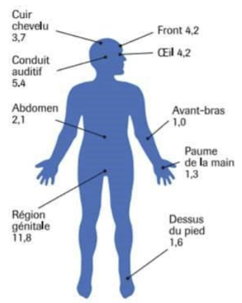
Toucher l'image pour l'agrandir{kind=link}
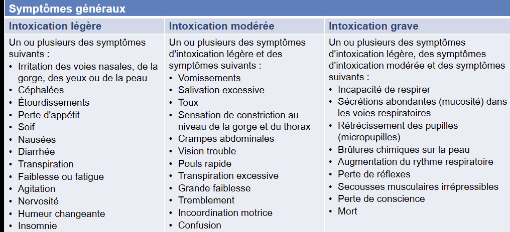
Toucher l'image pour l'agrandirAu Québec, le Centre antipoison (INSPQ) rapporte plusieurs centaines d'expositions/an, surtout aux insecticides domestiques.
{kind=link}
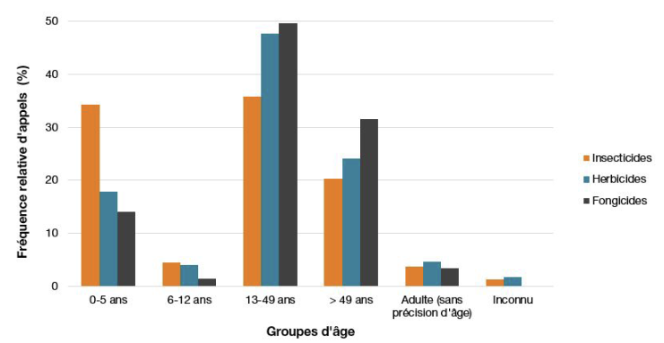
Toucher l'image pour l'agrandirIntoxication aiguë typique (organophosphorés)
{kind=link}
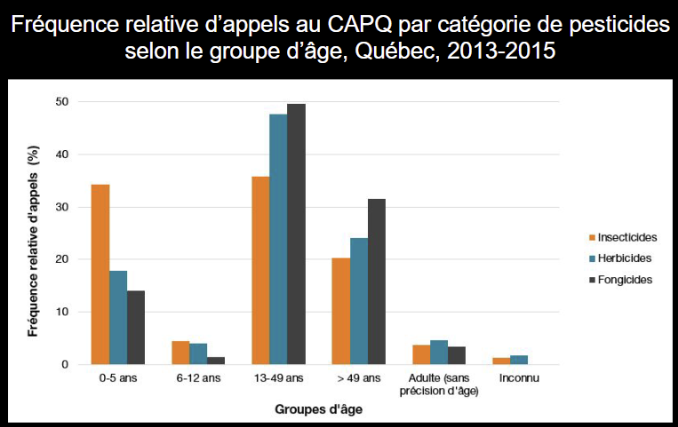
Toucher l'image pour l'agrandirCrise cholinergique = excès d'acétylcholine aux synapses
| Système | Symptômes (mnémo SLUDGE/DUMBELS) |
|---|---|
| Muscarinique | Salivation, larmoiement, urination, défécation, GI cramps, émèse (vomissements), bradycardie, bronchospasme, miosis |
| Nicotinique | Fasciculations, faiblesse musculaire, paralysie (incl. respiratoire), tachycardie |
| SNC | Anxiété, ataxie, convulsions, coma |
Antidotes : atropine (anti-muscarinique) + pralidoxime (réactivateur de la cholinestérase, dans les premières heures).
Intoxication chronique
Symptômes variés et non spécifiques : fatigue, troubles digestifs, troubles du sommeil, troubles cognitifs légers, dermatites, irritation.
Dermatoses de contact
Irritative (solvants des formulations) ou allergique (pesticide actif, additif). Voir Sensibilisants respiratoires et cutanés.
Effets chroniques
L'expertise collective Inserm 2013/2021 synthétise les données
| Effet | Pesticides impliqués (présomption forte) |
|---|---|
| Cancer de la prostate | Pesticides agricoles, organochlorés, certains OP |
| Lymphome non hodgkinien | Glyphosate (CIRC 2A), 2,4-D |
| Myélome multiple | Pesticides agricoles |
| Leucémies (enfant) | Expositions parentales pendant la grossesse |
| Maladie de Parkinson | Roténone, paraquat, OP (présomption forte) |
| Troubles cognitifs / Alzheimer | OP chronique |
| Reproduction | DBCP (stérilité historique), perturbateurs endocriniens |
| Asthme | Plusieurs |
| Effets fœtaux | Petit poids, malformations (exposition gestationnelle) |
| Système immunitaire | Immunosuppression possible |
| Perturbation endocrinienne | Atrazine, vinclozoline, DDE, mancozèbe ; voir Neurotoxicité, hématotoxicité et toxicité endocrinienne |
Réglementation et IRPeQ
Canada
- ARLA (Agence de réglementation de la lutte antiparasitaire, Santé Canada) : homologue les produits selon la Loi sur les produits antiparasitaires.
- Les pesticides ne sont pas assujettis au SIMDUT (étiquetage propre par l'ARLA).
Québec
- Code de gestion des pesticides (Loi sur les pesticides). Permis et certificats d'exterminateur, restrictions d'usage.
- Règlement modifiant le Code de gestion des pesticides (2018) : restrictions sur 5 pesticides à risque (atrazine, chlorpyrifos, néonicotinoïdes, etc.) ; justification agronomique requise.
- IRPeQ (Indicateur de risque des pesticides du Québec, MELCCFP) : outil de comparaison des produits selon leur risque.
Indicateurs IRPeQ
{kind=link}
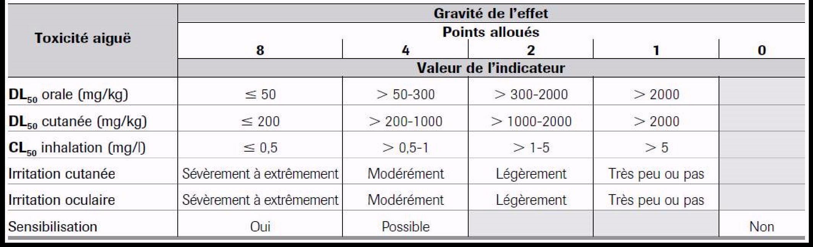
Toucher l'image pour l'agrandir{kind=link}
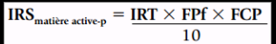
Toucher l'image pour l'agrandir{kind=link}
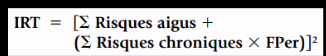
Toucher l'image pour l'agrandir{kind=link}
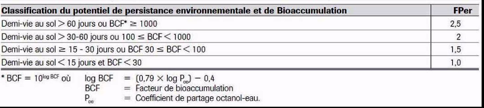
Toucher l'image pour l'agrandir- IRS (Indice de risque pour la santé) = somme pondérée des dangers (toxicité aiguë, chronique, IRPeQ-santé).
- Aide à choisir les pesticides les moins à risque pour la santé et l'environnement.
- Composantes : FPer (facteur de pénétration), FCP (facteur de compensation pour la préparation commerciale selon dose repère appliquée DRA), critères de toxicité aiguë.
Étiquetage et EPI
{kind=link}
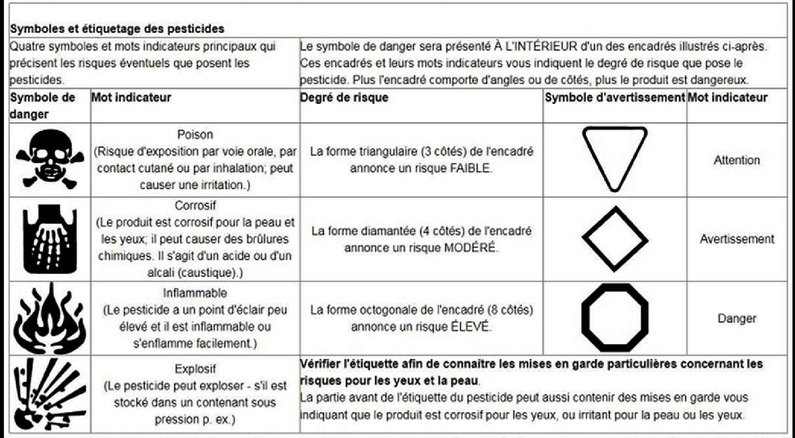
Toucher l'image pour l'agrandirÉtiquette pesticide ARLA
- N° d'homologation.
- Dangers (poison, sensibilisant, etc.).
- Délais de réintégration.
- EPI obligatoires (gants nitrile, combinaison, Protection respiratoire (APR), lunettes).
- Délais avant récolte.
Application terrain
L'usage de pesticides en mine est limité mais réel
| Usage minier | Type de produit | Risque clé |
|---|---|---|
| Biocides de circuits hydrauliques de forage | Glutaraldéhyde, isothiazolinones | Sensibilisation respiratoire + cutanée |
| Rodenticides en camp et bâtiments saisonniers | Anticoagulants (brodifacoum) | Ingestion accidentelle, exposition faune secondaire |
| Désinfectants (eau potable du camp, douches) | Chlore, dioxyde de chlore | Irritation respiratoire |
| Insecticides en camp (mouches noires, moustiques) | Pyréthrinoïdes (perméthrine), DEET (répulsif) | Faible toxicité aiguë, sensibilisation possible |
| Herbicides périphériques (digues, chemins miniers) | Glyphosate, 2,4-D | Cancer suspect, encadrement applicateur certifié |
| Bromure de méthyle pour fumigation (rare) | Fumigant | Très toxique, encadrement très strict |
Mesures clés
- Coordonner avec un applicateur certifié pour les usages réguliers (herbicides périphériques).
- Tenir un registre d'application (produit, dose, zone, date, applicateur).
- Pour les biocides hydrauliques : ventilation locale lors du remplissage, gants nitriles épais.
- Pour les rodenticides : appâts en stations sécurisées, formation du personnel d'entretien des bâtiments.
Ressources
| Document | Type | Source |
|---|---|---|
| Étiquette ARLA (homologation) | Étiquette | Santé Canada |
| Code de gestion des pesticides | Règlement | LégisQuébec |
| IRPeQ-Santé (calculateur) | Outil web | MELCCFP |
| Registre d'application minier | Registre interne | À maintenir |
Articles wiki connexes
Pages qui pointent ici (20)
- 🎯 Démarrage rapide, conseiller SST Toxicologie
- 🏠 Wiki Toxicologie, mines Toxicologie
- ADME, cheminement des contaminants dans l'organisme Toxicologie
- Familles de contaminants Toxicologie
- Hépatotoxicité et néphrotoxicité Toxicologie
- Métaux toxiques en milieu de travail Hygiène industrielle
- Métaux toxiques en milieu de travail Toxicologie
- Multiexposition aux contaminants Hygiène industrielle
- Multiexposition aux contaminants Toxicologie
- Neurotoxicité, hématotoxicité et toxicité endocrinienne Toxicologie
- Outils de priorisation des risques chimiques Hygiène industrielle
- Outils de priorisation des risques chimiques Toxicologie
- Priorisation et substitution chimique Toxicologie
- Reconnaître une exposition Hygiène industrielle
- Reconnaître une exposition Toxicologie
- SIMDUT et classes de danger Hygiène industrielle
- SIMDUT et classes de danger Toxicologie
- Solvants organiques Hygiène industrielle
- Solvants organiques Toxicologie
- Substances dangereuses Toxicologie